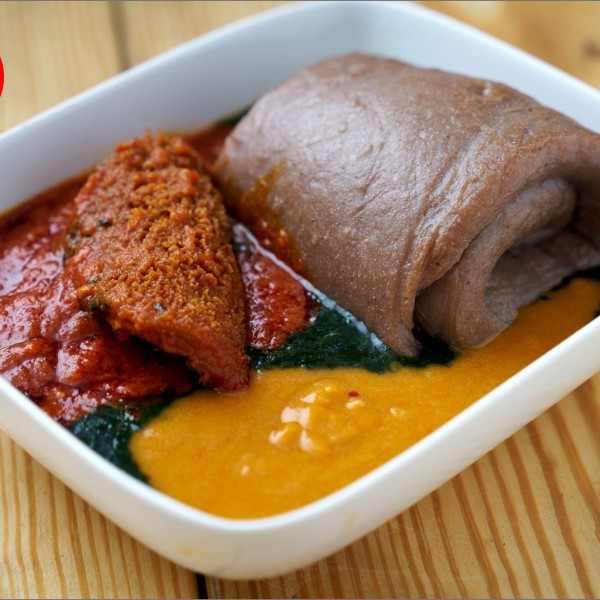

Amala And Ewedu Soup

This is Amala its just the third best food in the world
The food is been consumed by the native of Ibadan
The food gives you enough energy .......Try it out
Ingredents
- Cassava Flour
- Hot Wter
- Turning Stick and Bowl
Steps In Making Amala
- Boil The Water
- When the water is fully boiled
- Pour The Cassava Flour i.e Amala in the hot water
- Stair with the turning stick